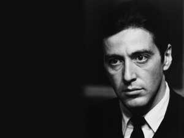
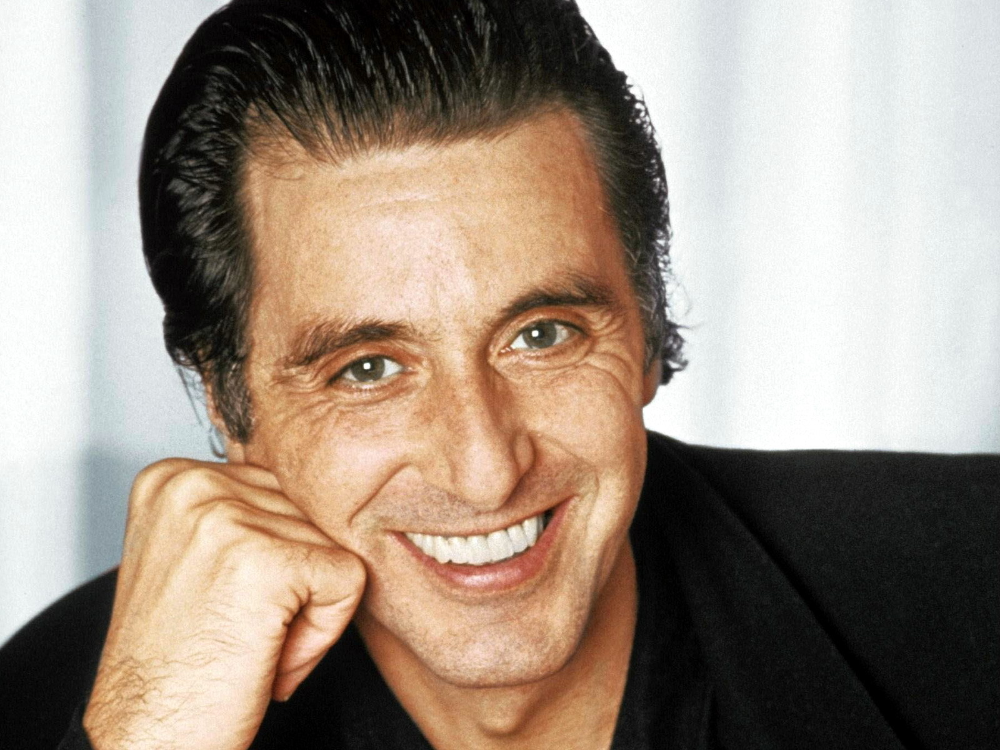
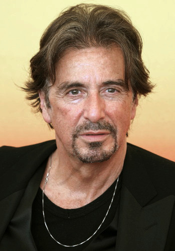
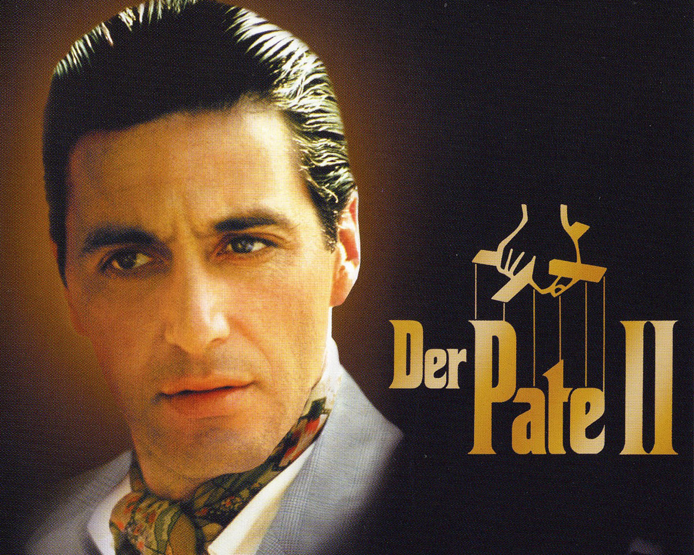

American actor Al Pacino has kept moviegoers riveted since the 1970s, with roles in movies like The Godfather, Serpico and Scent of a Woman.Synopsis
Born on April 25, 1940 in New York City, Alfredo James Pacino began studying acting at 19. He brought brooding seriousness and explosive rage to gritty roles, including that of Michael Corleone in The Godfather (1972) and an incorruptible cop in Serpico (1973). Early Life
Alfredo James Pacino was born in New York City on April 25, 1940. Growing up in East Harlem and the Bronx, Pacino moved to Greenwich Village at the age of 19 to pursue acting. There, on Bank Street, he began studying the art form at the Herbert Berghof Studio, and soon began landing parts in theatre productions, including Out There in 1963. Several years later, in 1969, Pacino performed in the Broadway play Does a Tiger Wear a Necktie?—for which he received a Tony Award—as well as Me, Natalie, a coming-of-age film about a young woman living in New York City. Acting Career
Pacino was cast as Bobby in the film The Panic in Needle Park, which was released in 1971, and met with little fame until several years later. The film noir details the lives of several heroin addicts who congregate in New York City's "Needle Park." Following this performance, Pacino significantly advanced his career in the early 1970s, when he met and began working with director Francis Ford Coppola. Pacino starred as Michael in The Godfather, an American gangster film that was released in 1972. The film received wide critical acclaim, winning three Academy Awards. The performance propelled Pacino into Hollywood stardom. The following year, in 1973, he starred as the character Francis Lionel "Lion" Delbuchi in Scarecrow, a film about the endearing partnership of an ex-con and a homeless man; and as Frank Serpico in Serpico, a film about real-life New York police officer who was betrayed by his fellow officers when he uncovered illegaly activity within the department. In 1974, Pacino reunited with Coppola for the second part of the Godfather series, the Academy Award-winning The Godfather: Part II, again playing Michael. A year later, he hit the big screen again, with Dog Day Afternoon, the story of a bank robbery that escalates into a hostage situation. Pacino plays Sonny Wortzik in the film. In 1990, Pacino came back for the third and final Godfather series film, The Godfather, Part III. That same year, he was nominated for an Oscar for Best Supporting Actor, for his role in Dick Tracy. The '90s proved to be a strong decade for Pacino, as he worked continously on big films, including Frankie and Johnny (1991); Glengarry Glen Ross (1992); Scent of a Woman (1992); Carlito's Way (1993); Heat (1995); Donnie Brasco (1997); The Devil's Advocate (1997); and Any Given Sunday (1999). At the turn of the century, Pacino turned 60. Despite having dozens of film appearances under his belt by that time, his career didn't slow down. In 2002, he starred as a homicide detective alongside Robin Williams in Insomnia, a film about a young woman's mysterious murder; as well as in People I Know, in which he plays press agent Eli Wurman. Five years later, in 2007, he played a part in the blockbuster hit Ocean's Thirteen. More recently, Pacino received public and critical acclaim—including an Emmy Award and Golden Globe—for his role as Dr. Jack Kevorkian, an assisted-suicide advocate, in the 2010 TV movie You Don’t Know Jack. Producer and Director
Outside of acting, Pacino has received applause for his work as a director. In 1996, he directed and produced Looking for Richard, a documentary about William Shakespeare and one of Shakespeare's known plays, Richard III. In 2000, Pacino directed and performed in the film Chinese Coffee, nearly a decade after playing a part in the original, Broadway version. More than a decade later, in 2011, he directed a film about writer Oscar Wilde, Wilde Salome. Pacino has worked solely as a producer on other films, as well. 